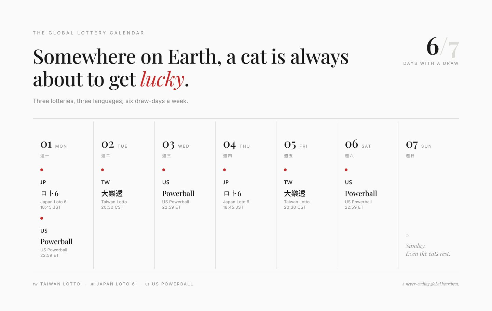

I tried to build a modern, AI-powered book of cat fortune-telling. It got one person a win.
LuckyCat looks like a joke: upload your cat, get lottery numbers. Underneath it was a genuinely strange idea — could crowd data rebuild an ancient folk art, and tell us which cat is actually the luckiest?
LuckyCat is a lucky-cat app that asks your cat to pick lottery numbers and ranks the world's luckiest cats. The real idea underneath: use crowd data to rebuild an old folk art — cat physiognomy — and find out which coat or face is actually luckiest. It reached friends-and-family testing, one cat genuinely won (delivered by hand, because the auto prize-check wasn't built), and it stalled under its own growing scope. Grounded in a real trend: in Taiwan, 2025 pet registrations hit 257,000 — 2.4× the 108,000 babies born, with cat registrations up 327% over a decade.
Are cats lucky? Everyone in Taiwan grows up assuming so: cats bring money. The maneki-neko — the lucky cat, the beckoning cat — sits by every cash register. There are lottery-shop legends: a scratch card, left under a sleeping cat, that turned out to be the jackpot. The cat as a tiny, furry fortune engine. I never questioned it. I just wondered about the next step.
Which cat, exactly? Whose is the lucky cat — and can you actually prove it?
If you put every cat on the same baseline — the same lottery, the same numbers, enough draws — could you eventually see it? Which face is luckiest. Which coat. A physiognomy for cats, built not from folklore but from data.
That was the actual idea hiding under a web toy. Chinese folk tradition has a whole genre for this: xiang mao jing, the classic "art of reading cats" — the same intuition as face-reading for people, that appearance and fortune are somehow linked. I wanted to feed that old book into the most modern thing I could reach and see if a crowd, over time, would turn superstition into a statistic. An AI-era book of cat fortune-telling. That was the dream. LuckyCat was just the doorway.
01Which cat is the luckiest? Why the question wasn't (only) a joke
People assume anything with cats and lottery numbers is a gag. Fine. But look at the ground it was standing on. In 2025, Taiwan registered about 257,000 pets — 2.4 times the 108,000 babies born that year. Over a decade, registered cats exploded by roughly 327% while newborns nearly halved. We have quietly become an island of cat people, and a real "cat economy" has grown up around it.
So no, wanting to show off your cat, and wanting your cat to be special, is not a niche. It's most of a generation. The market was real; the affection was real. Somebody was going to build the shelf for all of that. I just wanted it to be a slightly stranger shelf than usual.
And the questions people actually ask are wonderfully specific. Is an orange cat lucky? Are black cats unlucky, or is that a Western import? Which coat brings the most money — calico, tabby, tuxedo? Folklore has opinions on all of it. What folklore has never had is a scoreboard. That was the gap.
And yes — someone will say a leaderboard of cats is objectifying animals. I hear it. All I can say is: I know my own intention, and that's enough for me. It's a fond, silly statistic about creatures people adore. Nobody accuses face-reading of being cruel when it's flattering.
02The oracle-animal has a track record (and it sells)
Here's the part the sceptics forget: the "animal that predicts things" is one of the most reliably viral formats there is. It isn't a fringe gimmick. It's a recurring, global phenomenon that eats headlines every few years — and I say that as someone who's spent a good while in digital marketing, watching what actually travels.
Exhibit one: Paul the Octopus. At the 2010 World Cup he picked winners by choosing a mussel from one of two flag-marked boxes, and went 8 for 8 during the tournament — a perfect run that included Spain over the Netherlands in the final. Across his career he landed 12 of 14 predictions, an 85.7% hit rate. A German chancellor name-checked him. He got obituaries in real newspapers. An octopus.
Exhibit two, from my own turf — finance. Princeton's Burton Malkiel argued in A Random Walk Down Wall Street that "a blindfolded monkey throwing darts" could pick a portfolio as well as the experts. When Research Affiliates ran the numbers, the metaphorical monkeys didn't just match the pros — one analysis found random "monkey" portfolios beat the market 96 times out of 100 over the test period. The Wall Street Journal ran a real dartboard contest on this premise as a monthly column for 14 years, from 1988 to 2002.
Every era finds an animal to outsource its uncertainty to. An octopus for the World Cup. A monkey for the stock market. Why not a cat for the lottery?
So when I say there was a market here, I don't mean I ran a survey. I mean the pattern is old and it is loud: give people a charming animal, a random outcome, and a leaderboard, and they will show up. Pair that with the fact that in Taiwan pets now outnumber newborns 2.4 to 1, and "lucky cat picks your numbers" stops sounding like a joke and starts sounding like a distribution channel with fur.
03The patient zeros: Jigula and Maluchan
Every experiment needs its patient zero. Mine came in a pair. When I was first sketching this, there were two orange cats a friend and I had gone to adopt together — Jigula and Maluchan. They were the first faces uploaded, the very first test data. If any cats got this whole strange idea moving, it was these two.

Later I ended up with two of my own, a set of white brothers, and gave them names that were really wishes: Pangfu and Pangji — roughly "chubby fortune" and "chubby luck." That they'd grow up plump, healthy, blessed, and auspicious. They joined the database soon enough.

And here is the one law of this entire project I can state with total confidence, no dataset required: your own cat is always the cutest, the most beautiful, and the luckiest. The great book of cat fortune-telling will simply have to work around that.
04Does the cat actually pick the lottery numbers? (the honest answer)
Here's the confession the shelf label won't give you. The recognition — is this even a cat? — ran in the browser, because I refused to pay for anything, which meant stitching together free APIs that failed to connect roughly as often as they worked. When it worked, it was fine.
The numbers themselves? I did feed the old xiang mao jing into an AI and asked it to derive a modular set of coefficients — a way for a cat's features to nudge the draw. It was not good. It was a very long way from anything you could call analysis. So let me be precise about how much your cat participates in choosing your lottery numbers:
Ninety percent random. Ten percent my own special sauce. And the ten percent was mostly hope.
The grand physiognomy engine — classify every coat, run every face against outcomes, let the crowd surface the truly lucky patterns — was always the ideal state, never the shipped one. It never left friends-and-family testing. Which is a shame, because with enough people, it genuinely might have worked.
05The real numbers: 19 tickets, one win, delivered by hand
Let me give you the actual data, because it's small and honest and I'd rather you had the real thing than a rounded-up story. Across friends-and-family testing, the cats generated 19 lottery tickets. The leaderboard that came out of it is genuinely mine — a handful of cats, a few "awaiting draw," a few "no win," and, sitting at the top: one real winner. An 8th-prize hit on the Taiwan Lotto, worth NT$400.
NT$400 is, let's be clear, not a jackpot. It's a nice dinner. But it was a real ticket, checked against a real draw, and it is the entire reason I can tell you the machine worked at all.
And here's the part I have to correct, because the shelf label oversells the tragedy. The prize-checking itself was not missing. I'd built the boring, beautiful part: a Google Apps Script that pulled each draw automatically, checked every ticket against it in a Google Sheet, and pushed the results up to the leaderboard — hands-off, on schedule, every draw. That pipeline ran.
What was missing was the very last step: telling the human. The system knew the cat had won. The leaderboard knew. The one thing that didn't happen automatically was notifying the person who'd uploaded the photo. So I did it the way you'd tell a friend anything — I opened a messaging app and typed: your cat's numbers came up. The most automated lottery pipeline I've ever built, and its final mile was me, thumbs, and a chat bubble.
That's why the shelf still says 0 Winners. Not because nothing won — something did, and the system even recorded it — but because the counter that was supposed to announce it to the world was the one feature I never shipped.
06The version in my head (and why it buried the version on the shelf)
Here's the cruel irony: the thing that killed LuckyCat wasn't a lack of vision. It was too much of it. Let me show you the version that lived in my head, because it's genuinely good, and it's exactly why the real one stalled.
The plan was global by design. Three languages — English, Chinese, Japanese — each wired to that country's national lottery: the Taiwan Lotto, Japan's Loto 6, the US Powerball. And the draw days are beautifully staggered — Taiwan draws Tuesday and Friday, Japan's Loto 6 Monday and Thursday, Powerball Monday, Wednesday and Saturday. Line them up and six days out of seven, somewhere on Earth, a draw is happening. So the point was simple and lovely: almost any day, someone can upload a cat and pull a lucky ticket. A little global heartbeat of cats and numbers that never stops.

On top of that: automatic win notifications (the final mile I never shipped). A weekly EDM to everyone who joined — "the luckiest cat of the week," the highest prize-winner, crowned and emailed. And the part I'm still a little in love with: a tip jar. Buy this cat a coffee, and its owner films a short "number-picking" video — so the person who uploaded the photo actually earns a little pocket money from their cat's fame. A cat economy, closed loop, running on charm.
Every one of those features was a good idea. Together, they were a cliff. I kept adding doors to the hallway until I couldn't find the exit.
And there was one thing even the AI couldn't hand me: design. The functions I wrote were genuinely solid — the recognition, the GAS pipeline, the leaderboard. But I couldn't make it look finished, and the AI I leaned on couldn't either. Good engineering wrapped in something that felt like a prototype. That gap — between how well it worked and how unfinished it looked — is quietly demoralising in a way that's hard to explain until you've lived it.
So it stopped. Not with a decision, just a slow drift of attention. Which, I've come to believe, is how most side projects actually end.
Projects rarely die of failure. They get buried under the next three features you were certain you needed.
Looking back, the honest move was obvious: ship the complete loop — upload, auto prize-check, prize-money and probability leaderboard, and the notification — even if it only ever spoke one language and watched one lottery. One country, finished, beats the whole planet, imagined. Whether it ever grows to every draw on Earth, every coat classified, a real book of cat fortune-telling written by the crowd — that part I've made my peace with. That part can be up to fate. Which, given the subject matter, feels appropriate.
Jigula and Maluchan — the two orange strays a friend and I adopted, the first faces this thing ever saw — are, as of this writing, still near the top of a leaderboard almost nobody has looked at. Alongside Pangfu and Pangji, chubby fortune and chubby luck. Four cats, a NT$400 win, and a pipeline that worked right up until the last, unbuilt mile. The luckiest cats in the world, waiting patiently for the world to notice. Plump, healthy, and — the one statistic I'll never need data to confirm — obviously the most beautiful.
Next field note: Scope creep didn't kill this project — three quiet anxieties did. The honest anatomy of why a solo maker can't stop adding features and call it finished.